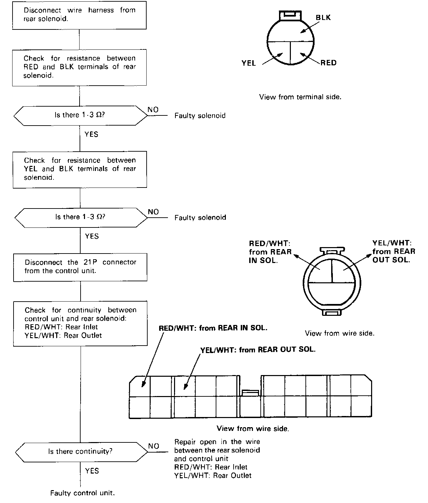

Operation CHARM
: Car repair manuals for everyone.
Home
>>
Acura
>>
1988
>>
Legend Coupe V6-2675cc 2.7L SOHC FI
>>
Repair and Diagnosis
>>
A L L Diagnostic Trouble Codes ( DTC )
>>
Testing and Inspection
>>
Manufacturer Code Charts
>>
Antilock Brake System
>>
DTC 9
DTC 9

Problem Code 9 or 10: Rear Solenoid Related Problem
NOTE:
Problem Code 10, also perform troubleshooting of Problem Code 5-1 to 7-8.